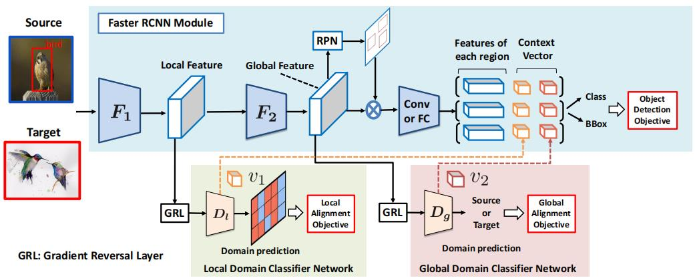
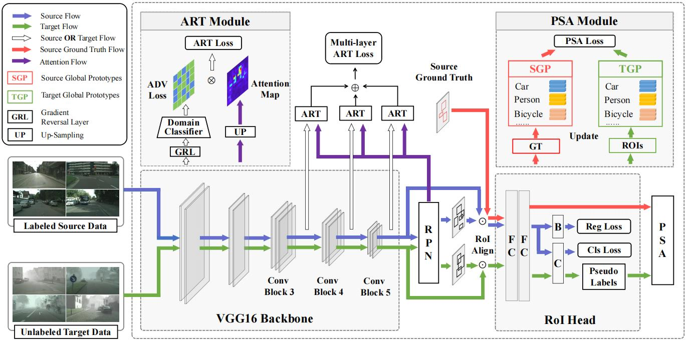
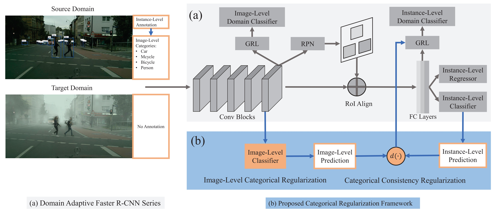
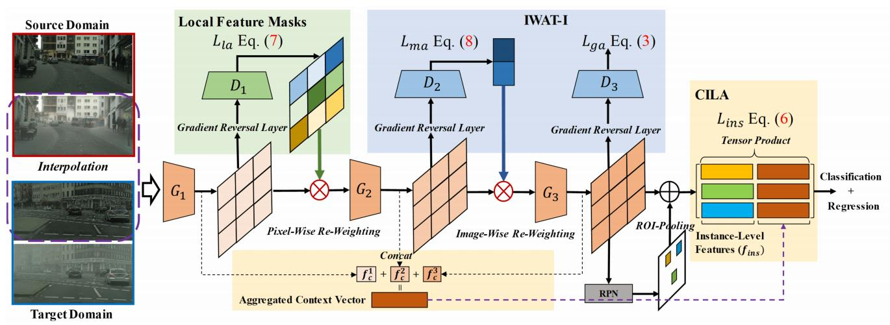
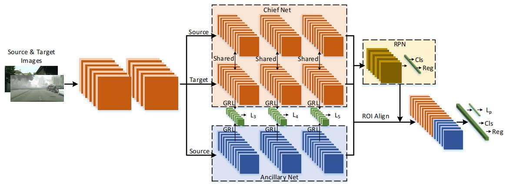

域适应目标检测汇总¶
注：如非特殊说明，源码均为PyTorch版本
2018¶
CVPR¶
DA Faster R-CNN

简介：本文提出了一种有效解决跨域目标检测问题的域适应Faster R-CNN算法，可以实现在不使用任何附加标记数据的情况下获得新领域鲁棒性的检测器。作者在对跨域目标检测理论分析的基础上，提出了一个图像级自适应组件和实例级自适应组件来缓解由域偏移引起的模型性能下降的问题，两个组件的训练都是基于\mathcal H散度的对抗性训练的，并且作者还设计了一个一致性正则化器，用于进一步学习一个域不变的RPN组件。
源码地址：https://github.com/yuhuayc/da-faster-rcnn
2019¶
CVPR¶
Strong-Weak

简介：本文提出了一种基于强局部对齐和弱全局对齐的无监督域适应目标检测算法，主要的贡献就是设计了一种弱对齐模块，将对抗损失集中在全局相似的图像上，远离全局不相似的图像，并且针对特征图上局部的感受野区域设计了强局部对齐模块。通过实验分析得到，该算法的性能要优于现有的域适应检测算法。
源码地址：https://github.com/VisionLearningGroup/DA_Detection
2020¶
CVPR¶
Coarse-to-Fine

简介：本文提出了一种由粗到细的特征自适应算法来解决跨域目标检测问题，该算法主要有两个模块构成——ART和PSA，前者利用注意力机制以类别不可知的方式构造前景区域，并且在领域特征对齐时突出前景区域的重要性，后者利用原型在语义层面(即结合了类别信息)对前景进行细粒度的调整，对每个类别执行不同的对齐。
ICR-CCR

论文地址：本文提出了一个基于DA Faster的分类正则化框架，以提高检测模型的自适应能力。具体的来说，作者利用了多标签分类网络的弱定位能力和图像级预测与实例级预测之间的一致性，通过让网络聚焦于对齐物体相关的局部区域特征和难对齐的实例特征来进一步提升模型的领域自适应能力。http://openaccess.thecvf.com/content_CVPR_2020/papers/Xu_Exploring_Categorical_Regularization_for_Domain_Adaptive_Object_Detection_CVPR_2020_paper.pdf
源码地址：https://github.com/Megvii-Nanjing/CR-DA-DET
HTCN

简介：本文为域适应目标检测领域提出了一种分级可转移校准网络(HTCN)，通过探索不同局部区域、图像和实例的可转移性来协调对抗性适应中可转移性和可辨别性之间的潜在矛盾。
源码地址：https://github.com/chaoqichen/HTCN
ECCV¶
CST-MCD

简介：本文首次揭示了二阶段检测器(如Faster RCNN)中的RPN、RPC模块在面临大的领域间隙时会表现出显著不同的可转移性（领域适应能力），基于上述观察，作者为RPN与RPC设计了协同自训练策略，让他们重点关注具有高置信度的ROI。另外，还设计了一种最大差异分类器，通过有效地利用低置信度的ROI来进一步提高检测模型的准确性和泛化能力。
论文地址：https://www.ecva.net/papers/eccv_2020/papers_ECCV/papers/123630086.pdf
源码地址：https://github.com/uitrbn/CST_DA_detection
ATF

简介：本文提出了一种非对称三路网络来解决无监督域适应目标检测中参数共享引起的源域特征失控问题，主要就是在网络中新加入了一个由源域标签监督训练的辅助网络，该网络参数和主网络参数相互独立。模型主要有两大贡献：①在参数共享的网络中，域差异难以消除，因此提出了非对称的网络结构来增强检测器的训练，这种不对称性可以很好地缓解源域和目标域之间标记不公平所带来的问题；②所提出的辅助网络使得源域特征分布可以保持结构区分性，很大程度上提高了目标域特征的可靠性。
论文地址：https://www.ecva.net/papers/eccv_2020/papers_ECCV/papers/123690307.pdf
源码地址：https://github.com/He-Zhenwei/ATF
2021¶
CVPR¶
MeGA-CDA

简介：本文提出了一种用于域适应目标检测的类别特征对齐方法，具体地来说，通过构建类判别器来将类别信息纳入领域对齐的过程中。为了克服缺乏目标域类别特征所产生的问题，作者提出了一种由记忆引导的注意力机制，该机制可以生成类别特定的注意力图来将主干特征提取网络得到的特征分配到不同的类判别器中。通过对齐类别特征，可以减轻由全局特征对齐引起的领域负迁移问题，进一步提升模型的领域适应能力。
最后一次修改日期：2022年3月19日